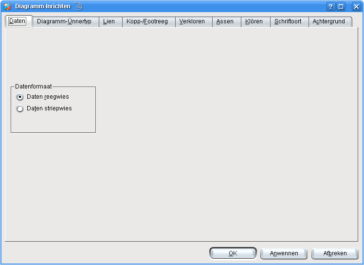
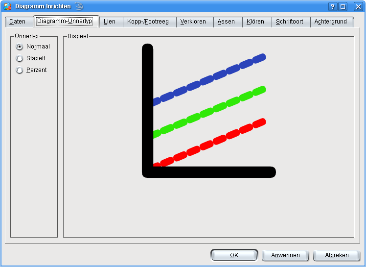
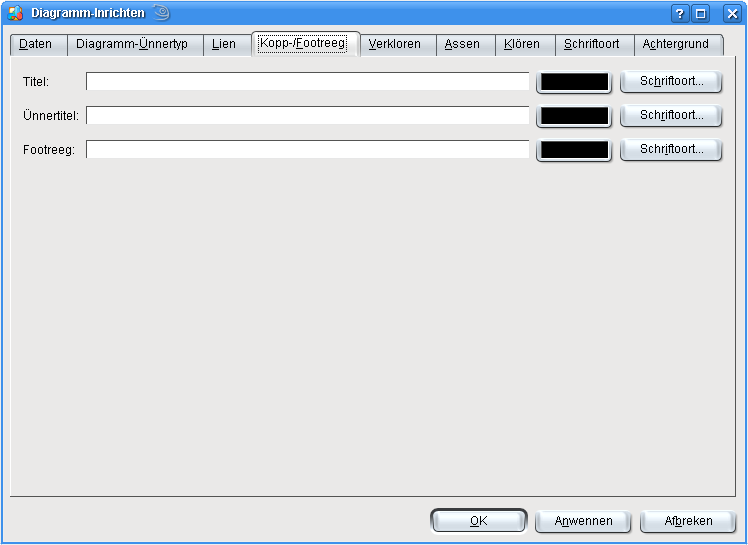
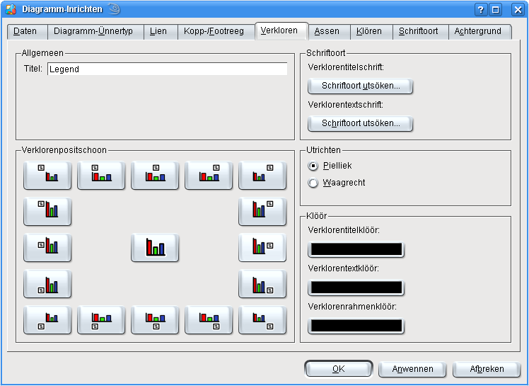
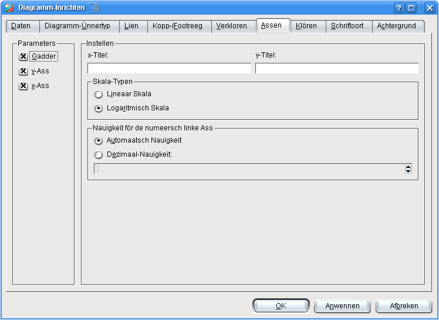
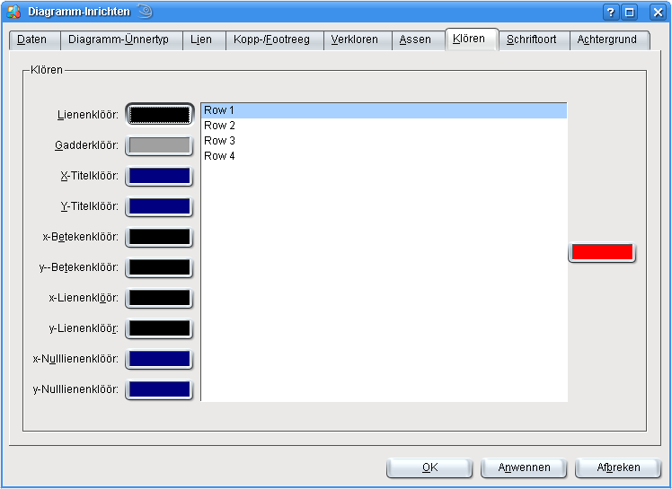
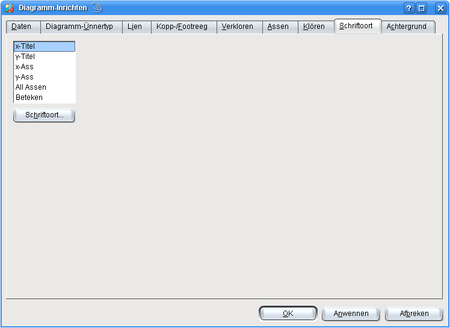
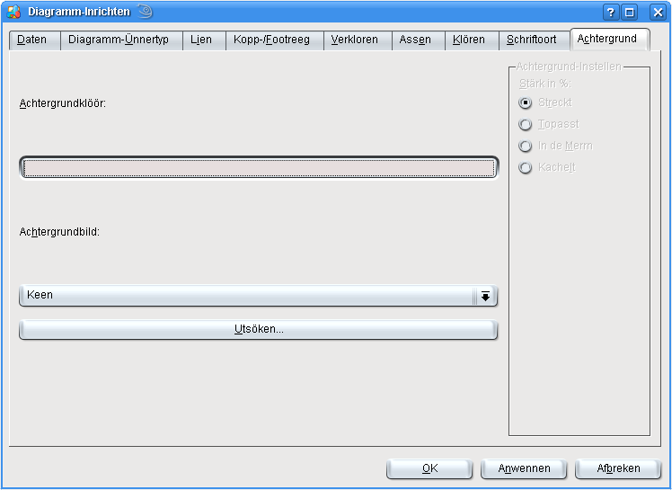

KChart stellt en Barg Instellen för dat Diagramm praat. Se sünd in'n Enkelbedrief verföögbor, man ok, wenn KChart na KSpread inbett is.
De veföögbor Optschonen hangt vun den utsöchten Diagrammtyp af. Wi söökt us nu maal mit en Klick op dat Lüttbild in'n Warktüüchbalken en Lienendiagramm as Typ ut.
In't Menü geiht dat mit ->, oder mit en Klick op na den Instellendialoog.

Op de eerste Instellensiet lett sik de Utdüden vun Regen un Striepen tuschen. Standardwies bargt en Reeg den Datensett un elk Striep de enkelten Datenreegweerten. Hier lett sik instellen, dat elk Striep en Datensett bargt. Beacht, dat de Weerten nich redig tuuscht warrt, man bloots ehr Utdüden.

Op de twete Instellensiet lett sik de vörtrocken Ünnertyp för dat Diagramm fastleggen. De verföögbor Ünnertypen hangt vun den Diagrammtyp af, hier dat Lienendiagramm. För en poor Diagrammtypen, de överhööft keen Ünnertypen bargt, warrt disse Instellensiet denn ok nich wiest. För elk Ünnertyp is en Vöransicht verföögbor.
Beacht, dat sik de Diagrammtyp in'n Warktüüchbalken utsöken lett, man dat sik de Ünnertyp in dissen Instellendialoog fastleggen lett.

Op de drüdde Siet laat sik för Titel, Ünnertitel un de Footreeg vun dat Diagramm egen Schriftoorden instellen.

Op disse Instellensiet laat sik all Ansichten för de Verkloren fastleggen. De Verkloren bargt de Naams för all Datensetten un ehr Klören, dormit sik de Daten binnen dat Diagramm düden laat.
Dat Feld Allmeen bargt den Verklorentitel, de baven binnen den Verklorenkasten wiest warrt. Mit dat Feld Positschoon lett sik de Verkloren na verscheden Steden binnen dat Diagramm utrichten, un mit den Knoop in de Merrn versteken.
In't Finster Schriftoort laat sik verscheden Schriftoorden för den Verklorentitel un för de enkelten Indrääg fastleggen. In't Finster Klöör laat sik ok noch verscheden Klören instellen.

Dat Finster Assen bargt de Instellen för de Diagrammassen. Se hangt ok wedder vun den Diagrammtyp af. För dat Lienendiagramm lett sik en lineaar oder en logarithmisch Skala utsöken, un dat Gadder an- oder utmaken.

In't Finster Klören laat sik de Klören för de Datensetten un en poor allmeen Diagrammkomponenten, as a.B. Assen, Lienen- un Gadderklöör instellen.

Op de Siet Schriftoort laat sik de verscheden Schriftoorden för de Assen, Beteken, usw. instellen. En poor Instellen laat sik twaars ok op anner Sieden fastleggen, man op de Schriftoordensiet sünd se all tohoop oplist.

Op de Siet Achtergrund laat sik de Achtergrundinstellen för dat Diagramm fastleggen. Du kannst verscheden Achtergrundklören oder ok en Achtergrundbild utsöken.
Mit disse Kortöversicht hest Du en Inföhren över en poor Diagramminstellen kregen, man noch nich för all. För anner Diagrammtypen, a.B. Balken, Lien un Koken, gifft dat noch mehr Instellensieden, de Du Di maal ankieken kannst. Probeer de Diagrammtypen ut un kiek Di ehr Instellenmööglichkeiten an. Lees de Kortinformatschonen un de "Wat is dat?"-Hülp. Wenn Du de "Wat is dat?"-Hülp bruken wullt, klick eenfach op dat Fraagteken un dorna op dat Rebeet binnen den Instellendialoog, över den Du mehr weten wullt.


Wullt Du wat to disse Siet seggen oder ehr verbetern?
Denn stüer Dien Vörslääg to den KDE-Dokmentatschoonkoppel!